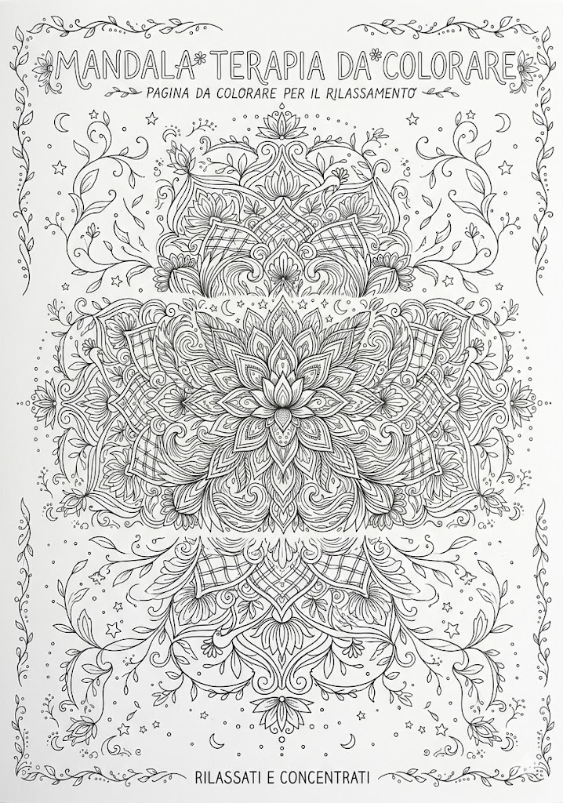

Protezione CivileGruppo Comunale Volontari — Genzano di Roma
Anziani · Rilassamento
Mandala terapia per il rilassamento
Adulti / anziani — esercizio motricità fine + concentrazione🌸 Colora il mandala con calma. La ripetitività dei motivi rilassa la mente. Concediti tempo, non c'è fretta.
